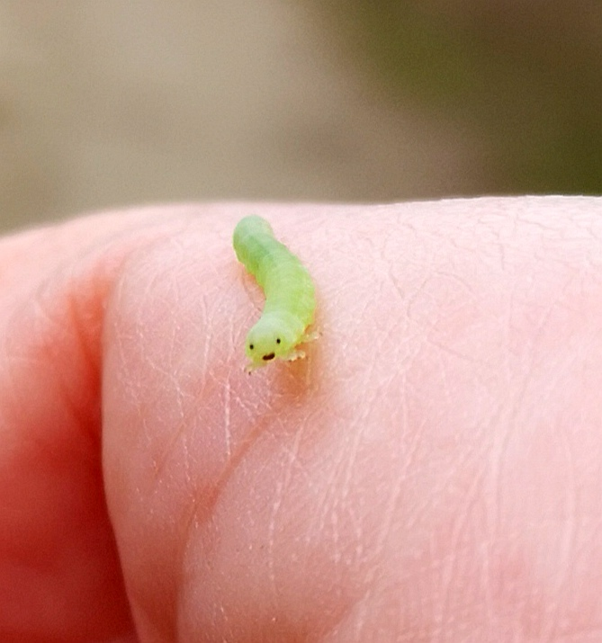

Min Sommarberättelse
Det absolut tråkigaste jag har gjort i sommar var att göra teoriprovet för körkort men jag har också gjort en rolig grej och det var att spela Guilty Gear Strive. Jag har badat en gång och det gav mig nostalgi. Det godaste jag åt i somras var calippo och jag skulle vilja jämföra smaken med päron. En tv-serie som jag upptäckte i somras var 86 Eighty-Six och den skulle jag vilja rekommendera till alla som inte skänner mig. En person jag träffade i somras var Tymon och jag skulle vilja citera han genom att säga "Love your subhuman self". Vid ett tillfälle i somras åkte jag till paradiset, där fanns det både vatten och människor. Jag skulle vilja sammanfatta min sommar med tre ord ung, dum, och väldigt skum. En helt okej sommar men nog har jag allt längtat efter att jag ska få börja skolan igen och jag tror att detta år på NTI kommer att bli jobbigt med extra spice.